Creating an Experiment
Adding a New Study (Ctrl+N)
- In iMotions click on the icon next to Library on the left hand of the screen.
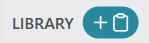
- Enter the appropriate information into the specified fields.
- Leave the resolution and Display metrics as they are defaulted.
- Choose whether or not you want your stimuli to be randomized or follow the order that they are arranged in the navigator above (at this point the top of your screen should be blank).
- If you wish to use blocks, make sure you check off Enable.
- Using blocks will allow you to add specific randomization as well as looping, conditions, etc.
- A description is not necessary, but it can help.

All of the above customization occurs within the Study Settings tab.
Click Next to progress to the next tab, Sensors.
- Depending on what data collection method you are looking for will change your selection.
- If you are using Eyetracking make sure you check off the box.
- If you are using the EEG, make sure you select Lab Streaming Layer.
Adding Stimuli (Ctrl+S)
- At the top right of the screen you will see an icon, which when hovered over will allow you to add stimuli to your experiment.
You can use the following stimuli types:
- Image/Video
- This option will most likely be the primary stimuli used in experiments. Most file formats are accepted.
- Web Site
- This option is useful if you wanted to see where participants look at certain websites. Advertisements, banners, pictures, etc.
- Screen Recording
- This option is useful if your experiment is not based on a survey or cannot be created with iMotions built-in tools.
- e.g. Superlab/MATLAB/PsychoPy Experiments
- This option is useful if your experiment is not based on a survey or cannot be created with iMotions built-in tools.
- Face Recording
- This option is useful if you are interested in viewing facial data.
- Post processing look at facial expressions, clues to explain odd data.
- Scene Recording
- This option is useful if you are using a USB camera to record interaction or data with something outside of your primary screen.
- Survey Slide
- This option is useful to create instructions, fixation crosses, and complete surveys.
- Qualtrics Survey
- This option is useful to incorporate a pre-existing Qualtircs survey with the ability to collect biometric data.

For the purpose of this walkthrough, we will be using Images/Video and Survey Slide.
Add an Instructions Survey Slide

- All experiments should have an instructions slide. The purpose is to tell participants what they will be seeing in the experiment, as well as to create a buffer time before you start collecting the data.
- Having a participant read a slide before collecting data might help in reducing any anxiety or stress experienced from being in an unfamiliar place.
- Click the Add Stimulus to Study button, or hit Ctrl+S.
- Select Survey Slide

Double click Rich Text on the navigation menu to the left.
- Enter your instruction text.
In the following experiment, you will be shown several images. Before each image you will see a cross, please do your best to focus on the cross. When you are ready to begin, press SPACE.
- Click Save to Study at the bottom of the right of the screen.
- Add another Survey Slide to your study.
- This stimulus will act as a way for participants to type in what they saw and in what order they saw them.
- From the menu, select Text Response from the left navigation window.
- Add a Rich Text object as well to tell your participants what they will be doing.
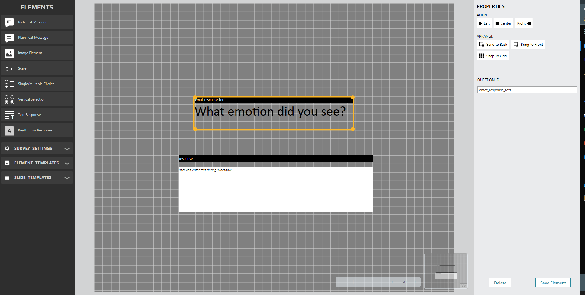
Add images to the study
- Select Images/Video from the Add Stimulus to Study option.
- Import the images or videos you will be working with.
- For our example, we will be using images of emotional scenes which can be downloaded here.
- Select angry.png and press shift and click on sad.png to select all four images.
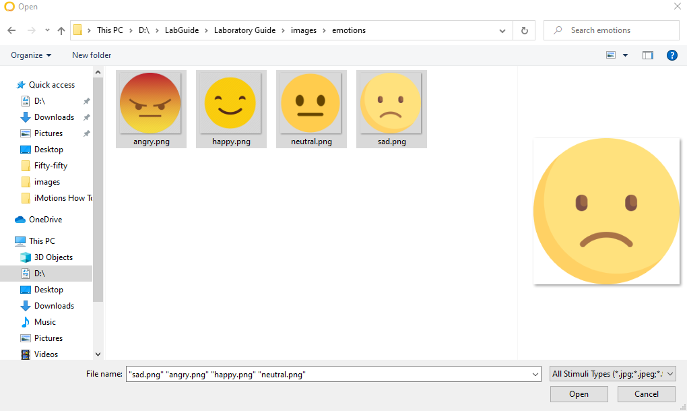
- Give your image(s) the appropriate name.
- Indicate the exposure time and description.
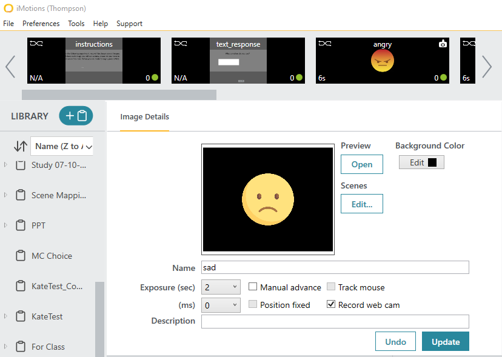
Note: There is a lower limit to exposure that stops at 50ms.
- You can also decide whether or not you want the slides to be advanced upon an input or limited to time frame.
- Manual Advance: Require participant to submit a response before continuing
- Exposure: This is helpful if you want to show an image for a specific duration of time
Multiple Responses
Let’s think about our experiment for a moment!
We want to show our participants an emotional image and then ask them what they say. We have four images, so we need to use four text responses!
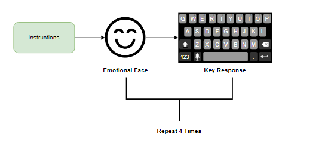
Right-click on text-response and click Clone.
- Repeat this step four times.
Organizing Stimuli in Block Editor
Assuming that you have set your study settings to enable Stimuli Blocks, you will be able to access the Stimuli Batch Editor.
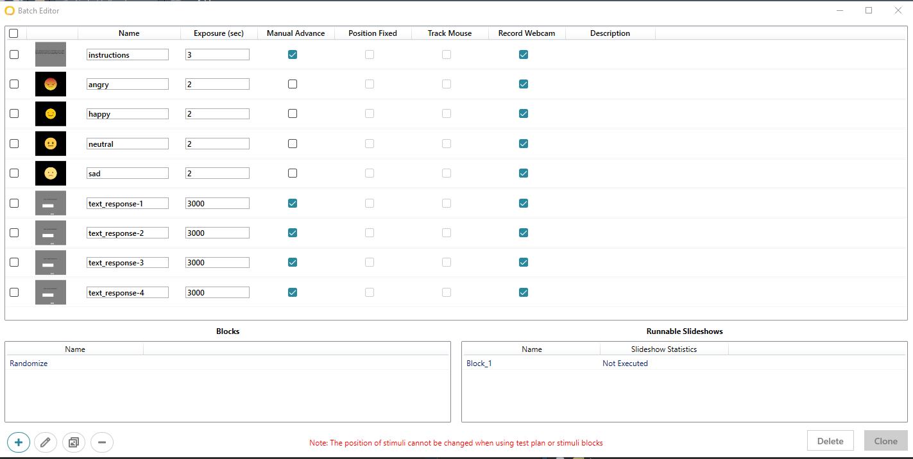
- Here you will see a preview of all of your stimuli, the name and exposure time. Additionally, you will see options for Manual Advance, Position Fixed, Track Mouse and Record Webcam.
- For our purposes we would like to make it so that the experiment always begins with instructions, followed by our four images that will be randomized. The experiment will always finish with a response from the participant.
- Select the Add New Block icon from the bottom bar.
- Select each of your image stimuli and click on the right arrow to add them into the other window.
- Select all four text-responses and place them beneath the emotional image
- Emotion > Text Response > Emotion > Text Response, etc.
- Label this block “Randomize” and Save and Exit.
- Select the Add New Block icon from the bottom bar.
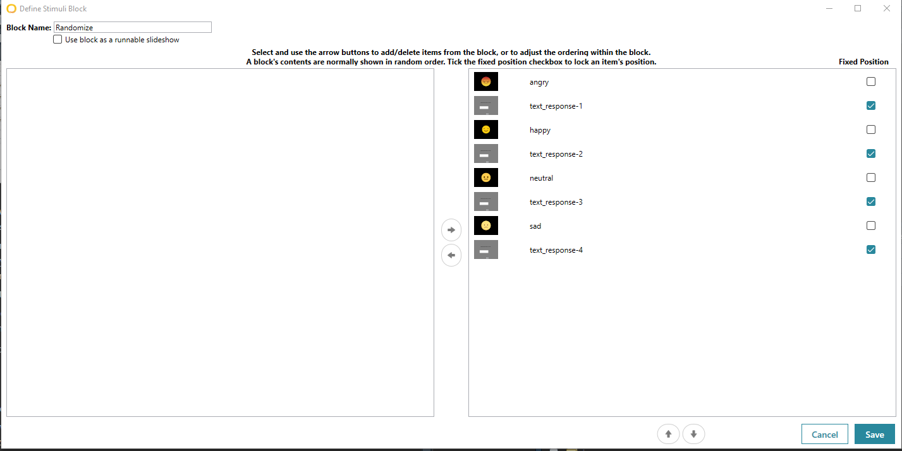
- Add another block
- Add your two survey slides into the right window and make sure to place the folder icon. “Randomize” in between them.
- Make sure to check the box that says Use Block as a runnable slideshow.
- Label this block “Main Block” and Save and Exit.
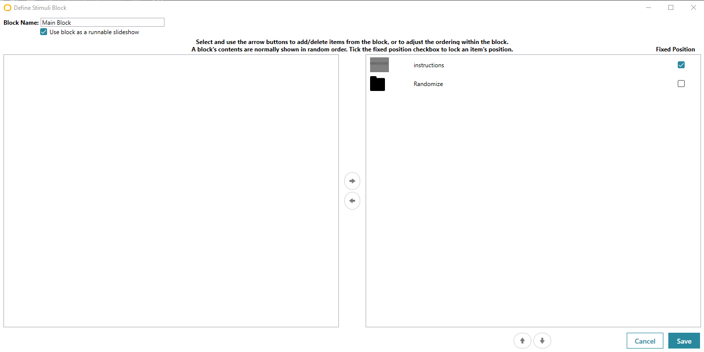
- It is always a good idea to make sure your block is appearing how you would like it to.
- Select the third icon on the bottom row that says View Block
- In this window you should see your nine items:
- Instructions > Four Emotional Faces > Four Text Responses
- You should notice that Main Block stretches across the entire experiment and Randomize only stretches across the image stimuli.
- Press Shuffle a few times to make sure that the images are randomizing.
- Close the window to return to the editor and close that window as well.
- Select the third icon on the bottom row that says View Block
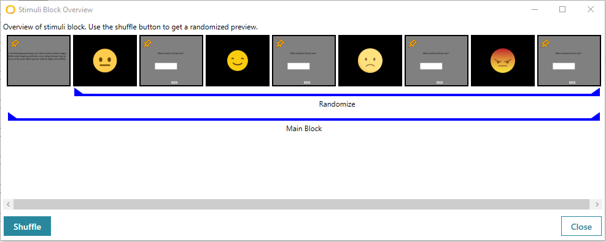
Consider Making a GIF of this!
Adding a new User (Ctrl+D)
- Select the icon on the right side of the screen next to where it says Respondents.
- Enter the appropriate information in the dialog boxes.
- For testing purposes, you can put your own name in the box appended with “_test” so it can be deleted later on.
- e.g “Dave_Test”
- Otherwise, this field should contain only the participants SONA ID.
- For testing purposes, you can put your own name in the box appended with “_test” so it can be deleted later on.
- Log the appropriate characteristics of Gender and Age.
- If you plan to group your data by conditions, you can add a field in the Group dialog box.
- Leave the calibration mode as Regular.

Running the study
- You are now ready to start collecting data for this study!
- Make sure to select your Respondent before you select Start Recording.

- If you are using blocks in your experiment as we are in this sample one, it is helpful to select Auto select block to run in the Study Settings tab.
- Make sure that you are using the correct sensors
- Once you click Start Recording you will be prompted with an informed consent window. This is a good reminder to make sure you obtain consent before any participant sits in the chair!
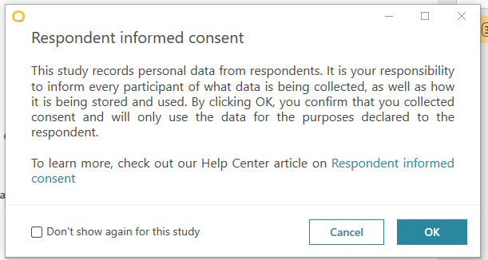
Once you have collected data, we will take a look at processing and analyzing the results!
Analyzing Data
Note: The study becomes locked once you have 1+ respondent. If you want to edit anything in the study, you will need to delete any test data.
After you have collected data,right-click on your study name and select Add Analysis. You will see a screen with a series of steps referring to Segmentation. There are times when you might want to only analyze a certain age range, or a certain sex, or a certain condition.
You can name the analysis setting for future use as well.


You will then be able to configure Sensor Settings, that is–what you want to analyze in your data. In the Signal Processing section, click the + icon to add a new analysis option.
Select R Analysis GazeAnalysis I-VT Filter as the Device.
Select Raw Data Aggregationas the Algorithm
Change the Flow Name as you see fit!
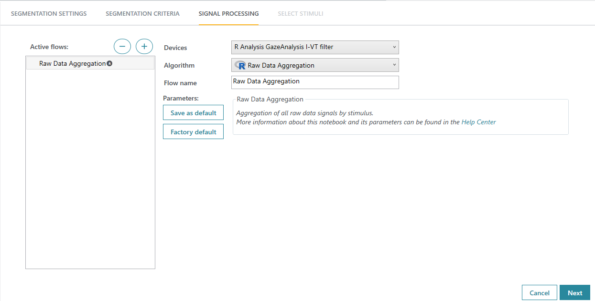
Next, you will be able to select the stimuli that you want to include in the analysis.
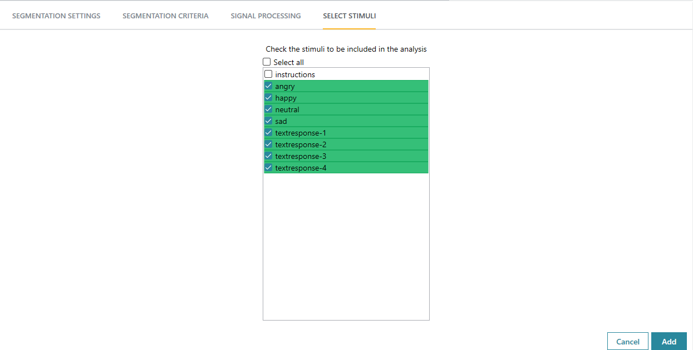
I deselected Instructions as that is not a stimulus I would envision getting much data from. Unless you were looking at attention or if you have some measure embedded in the instructions, I would suggest deselecting it.
You will then be shown an overview of analyses with the following options:
Replay
Aggregate
AOI’s
Heatmap
Signal Processing
Reports
Export
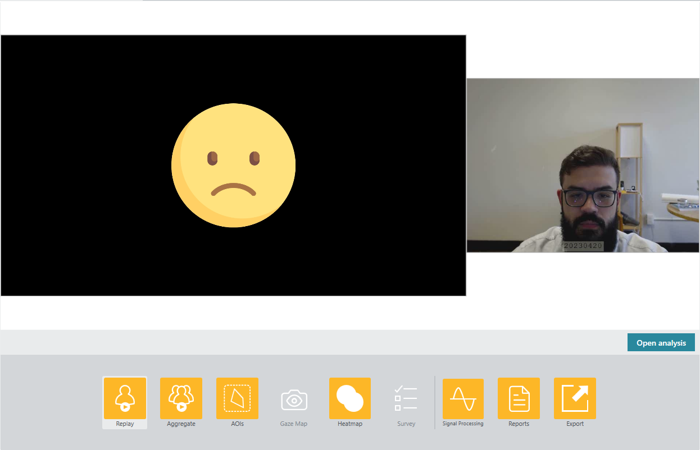
Here is an explanation for each section:
Replay: This shows you a video of the respondent and the selected stimulus.
Aggregate: This will allow you to view different metrics across multiple participants. This is useful if you want to get a general heatmap of how all participants gaze.
AOI’s: This will allow you to create Areas of Interest as well as calculate metrics.
Heatmap: This creates an aggregate density of where the participant was fixated during the study. Darker areas correspond to longer fixations.
Signal Processing:
Reports:
Export:
Heatmaps